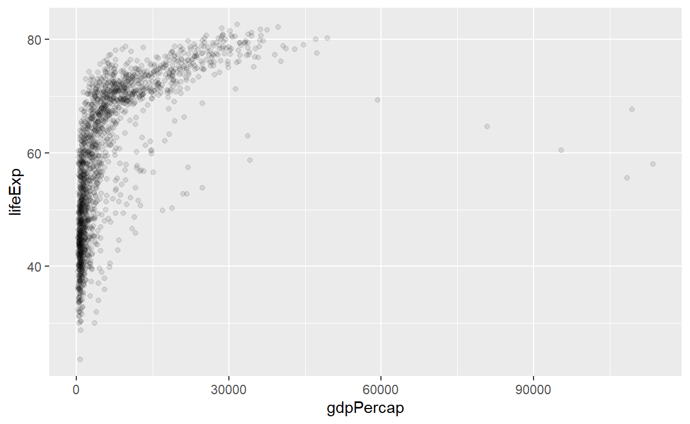
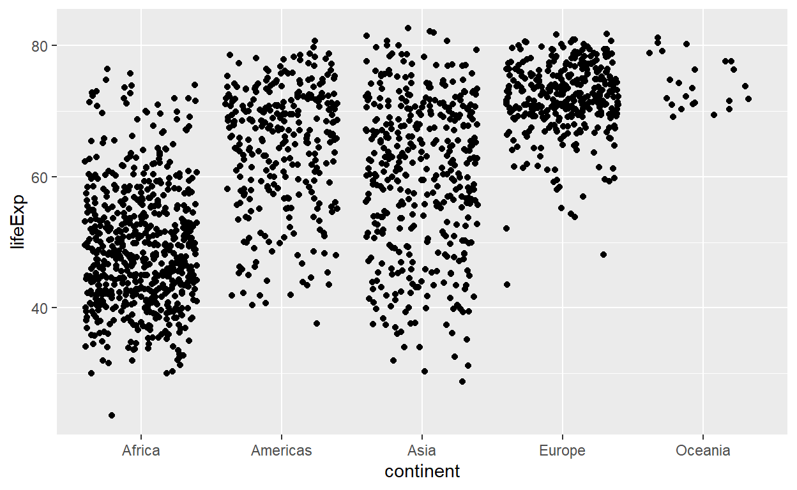
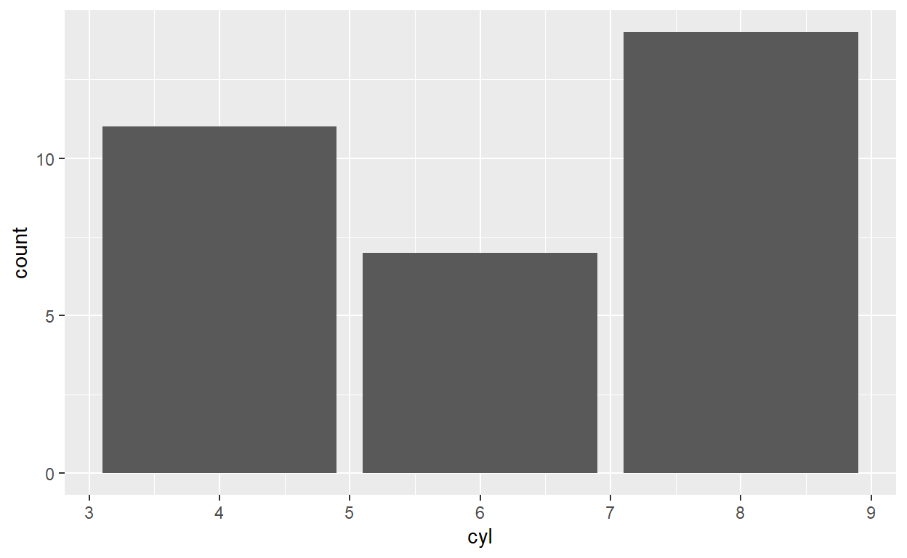

Getting Started
By the end of this lesson, you will be able to:
- Identify the plotting framework available in R
- Have a sense of why we’re learning the ggplot2 tool
- Have a sense of the importance of statistical graphics in communicating information
- Identify the seven components of the grammar of graphics underlying ggplot2
- Use different geometric objects and aesthetics to explore various plot types.
Resources
For me, I learned ggplot2 from Stack Overflow by
googling error messages or “how to … in ggplot2” queries, together with
persistence. It might take you a bit longer to make a graph using
ggplot2 if you’re unfamiliar with it, but persistence pays
off.
Here are some good walk-throughs that introduce ggplot2, in a similar way to today’s lesson:
- r4ds:
data-vis chapter.
- Perhaps the most compact “walk-through” style resource.
- The ggplot2
book, Chapter 2.
- A bit more comprehensive “walk-through” style resource.
- Section 1.2 introduces the actual grammar components.
- Jenny Bryant’s
ggplot2 tutorial.
- Has a lot of examples, but less dialogue.
Here are some good resource to use as a reference:
- ggplot2 cheatsheet
- R Graphics Cookbook
- Good as a reference if you want to learn how to make a specific type of plot.
Orientation to plotting in R
A little history
Traditionally, plots in R are produced using “base R” methods, the
main function here being plot(). This method tends to be
quite involved, and requires a lot of “coding by hand”. That said, for
simple plots and some built-in functions, using plot() is
great. For example, R has built-in regression diagnostics:
mod <- lm(dist ~ speed, data = cars)
par(mfrow = c(2, 2))
plot(mod)Then, an R package called lattice was created that aimed
to make it easier to create multiple “panels” of plots. It seems to have
gone by the wayside in the R community.
After lattice came ggplot2, which provides
a very powerful and relatively un-fiddly framework for making plots. It
has a theoretical underpinning, too, based on the Grammar of Graphics,
first described by Leland Wilkinson in his “Grammar
of Graphics” book. With ggplot2, you can make a great
many type of plots with minimal code. It’s been a hit in and outside of
the R community.
- A big advantage of
ggplot2is that many people have written extensions for it, such astidybayes(for plotting distributions and intervals),gganimate(for animations and gifs) andggforce(lots of very customizable features).
Check out this comparison of the three by Joseph V. Casillas.
A newer tool is called plotly, which was actually
developed outside of R, but the plotly R package accesses
the plotly functionality. plotly graphs allow for
interactive exploration of a plot. You can convert ggplot2
graphics to a plotly graph, too.
There are also some non-R plotting interfaces that are useful when you need highly customized solutions, such as D3, accessible in R using the r2d3 package.
TL;DR
We’re using ggplot2 in DataSci.
Just plot it
The human visual cortex is a powerful thing. If you’re wanting to point someone’s attention to a bunch of numbers, you probably won’t get any “aha” moments by displaying a large table like this, either in a report or (especially!) a presentation.
Make a plot to communicate your message!
If you really feel the need to tell your audience exactly what every quantity evaluates to, consider putting your table in an appendix. Because chances are, the reader doesn’t care about the exact numeric values. Or, perhaps you just want to point out one or a few numbers, in which case you can put that number directly on a plot.
The grammar of graphics
You can think of the grammar of graphics as a systematic approach for
describing the components of a graph. It has seven components (the ones
in bold are required to be specifed explicitly in
ggplot2):
- Data
- The data that you’re feeding into a plot.
- Aesthetic mappings
- How are variables (columns) from your data connect to a visual dimension?
- Horizontal positioning, vertical positioning, size, colour, shape, etc.
- These visual dimensions are called “aesthetics”
- Geometric objects
- What are the objects that are actually drawn on the plot?
- A point, a line, a bar, a histogram, a density, etc.
- Scales
- How is a variable mapped to its aesthetic?
- Will it be mapped linearly? On a log scale? Something else?
- This includes things like the color scale
- e.g., c(control, treatment_1, treatment_2) -> c(“blue”, “green”, “red”)
- Statistical transformations
- Whether and how the data are combined/transformed before being plotted
- e.g., in a bar chart, data are transformed into their frequencies; in a box-plot, data are transformed to a five-number summary.
- Coordinate system
- This is a specification of how the position aesthetics (x and y) are depicted on the plot. For example, rectangular/cartesian, or polar coordinates.
- Facet
- This is a specification of data variables that partition the data into smaller “sub plots”, or panels.
These components are like parameters of statistical graphics, defining the “space” of statistical graphics. In theory, there is a one-to-one mapping between a plot and its grammar components, making * this a useful way to specify graphics.
Example: Scatterplot grammar
For example, consider the following plot from the gapminder data set. For now, don’t focus on the code, just the graph itself.
ggplot(gapminder, aes(gdpPercap, lifeExp)) +
geom_point(alpha = 0.1) +
scale_x_log10("GDP per capita", labels = scales::dollar_format()) +
theme_bw() +
ylab("Life Expectancy")
This scatterplot has the following components of the grammar of graphics.
| Grammar Component | Specification |
|---|---|
| data | gapminder |
| aesthetic mapping | x: gdpPercap, y: lifeExp |
| geometric object | points |
| scale | x: log10, y: linear |
| statistical transform | none |
| coordinate system | rectangular |
| facetting | none |
Note that x and y aesthetics are required
for scatterplots (or “point” geometric objects). In general, each
geometric object has its own required set of aesthetics.
Bar chart grammar
Give it a go!
Consider the following plot. Don’t concern yourself with the code at this point.
gapminder %>%
filter(year == 2007) %>%
mutate(continent = fct_infreq(continent)) %>%
ggplot(aes(continent)) +
geom_bar() +
theme_bw()Working with ggplot2
First, the ggplot2 package comes with the tidyverse
meta-package. So, loading that is enough.
There are two main ways to interact with ggplot2:
1.The qplot() or quickplot() functions (the
two are identical): Useful for making a quick plot if you have vectors
stored in your workspace that you’d like to plot. Usually not worthwhile
using.
- The
ggplot()function: use to access the full power ofggplot2. Let’s use the above scatterplot as an example to see how to use theggplot()function.
First, the ggplot() function takes two arguments: -
data: the data frame containing your plotting data. - mapping: aesthetic
mappings applying to the entire plot. Expecting the output of the
aes() function.
The aes() function tells R to look in the data for
variable names. Notice that the aes() function has x and y
as its first two arguments, so we don’t need to explicitly name these
aesthetics. Beyond these basic arguments, you can also specify others,
such as color, alpha (transparency), size, group.
Different plot shapes (geom_SOMETHING) accept different
aes() arguments. These are listed in the help file for the
geom function: ?geom_point, ?geom_line,
etc.
You can specify values for aesthetic parameters using constants or
variables from outside data by specifying them outside of
aes(). For example, to make all of the shapes of plot blue,
you can add: color = "blue".
ggplot(gapminder, aes(gdpPercap, lifeExp))This just initializes the plot. It has the “data” and “aesthetics” part of the grammar of the plot, but we don’t see anything because we haven’t yet specified the geometries or other parts of the grammar.
You’ll notice that the aesthetic mappings are already in place (the x and y axes). Now, we need to add components by adding layers, literally using the + sign. These layers are functions that have further specifications.
For our next layer, let’s add a geometric object to the plot, which
have the syntax geom_SOMETHING(). There’s a bit of
overplotting (overlapping symbols), so we can specify some alpha
transparency using the alpha argument (you can interpret alpha as
needing 1/alpha points overlaid to achieve an opaque
point).
ggplot(gapminder, aes(gdpPercap, lifeExp)) +
geom_point(alpha = 0.1)
That’s the only geom that we want to add. Now, let’s
specify a scale transformation, because the plot would really benefit if
the x-axis is on a log scale. These functions take the form
scale_AESTHETIC_TRANSFORM(). As usual, you can tweak this
layer, too, using this function’s arguments. In this example, we’re
re-naming the x-axis (the first argument), and changing the labels to
have a dollar format (a handy function thanks to the scales
package).
ggplot(gapminder, aes(gdpPercap, lifeExp)) +
geom_point(alpha = 0.1) +
scale_x_log10("GDP per capita", labels = scales::dollar_format())
I’m tired of seeing the ugly default grey background, so I’ll add a
theme() layer. I like theme_bw() (you can
tweak themes later, too!). Then, I’ll re-label the y-axis using the
ylab() function. Et voilà!
ggplot(gapminder, aes(gdpPercap, lifeExp)) +
geom_point(alpha = 0.1) +
scale_x_log10("GDP per capita", labels = scales::dollar_format()) +
theme_bw() +
ylab("Life Expectancy")
mauna <- tsibble::as_tsibble(co2) %>%
rename(month = index, conc = value) %>%
mutate(month = as.Date(month))Produce a line chart showing the concentration over time. Specifically, the plot should have the following grammar components:
| Grammar Component | Specification |
|---|---|
| data | mauna |
| aesthetic mapping | x: month, y: conc |
| geometric object | lines |
| scale | linear |
| statistical transform | none |
| coordinate system | rectangular |
| facetting | none |
Fill in the code below, replace FILL_THIS_IN with the
correct code.
ggplot(FILL_THIS_IN, aes(FILL_THIS_IN, FILL_THIS_IN)) +
FILL_THIS_IN()ggplot(mauna, aes(x = month, y = conc)) +
geom_line()A tour of some important geoms
Here, we’ll explore some common plot types, and how to produce them
with ggplot2.
Histograms: geom_histogram()
Useful for depicting the distribution of a continuous random variable. Partitions the number line into bins of certain width, counts the number of observations falling into each bin, and erects a bar of that height for each bin.
Required aesthetics:
x: A numeric vector.- By default, a histogram plots the count on the y-axis. If you want to use proportion (i.e., “density”), specify the y = ..density.. aesthetic.
You can change the smoothness of the plot via two arguments (your choice):
bins: the number of bins/bars shown in the plot.binwidth: the with of the bins shown on the plot.
Example:
ggplot(gapminder, aes(lifeExp)) +
geom_histogram(bins = 50)Density: geom_density()
Essentially, a “smooth” version of a histogram. Uses kernels to produce the curve.
Required aesthetics:
x: A numeric vector.
Good to know:
bw argument controls the smoothness: Smaller =
rougher.
Example:
ggplot(gapminder, aes(lifeExp)) +
geom_density()Jitter plots: geom_jitter()
A scatterplot, but with minor random perturbations of each point. Useful for scatterplots where points are overlaying, or when one variable is categorical.
Required aesthetics:
x: any vectory: any vector
Example:
ggplot(gapminder, aes(continent, lifeExp)) +
geom_jitter()
Box plots: geom_boxplot()
This geom makes a boxplot for a numeric variable in each of a category. Useful for visualizing probability distributions across different categories.
Required aesthetics:
x: A factor (categorical variable)y: A numeric variable
Example:
ggplot(gapminder, aes(continent, lifeExp)) +
geom_boxplot()Ridge plots: ggridges::geom_density_ridges()
A (superior?) alternative to the boxplot, the ridge plot (also known as the “joy plot”, but don’t use that term) places a kernel density for each group, instead of the box.
You’ll need to install the ggridges package. You can do
lots more with ridges – check out the
ggridges intro vignette.
Required aesthetics (reversed from boxplots!)
x: A numeric variabley: A factor (categorical variable)
Example:
ggplot(gapminder, aes(lifeExp, continent)) +
ggridges::geom_density_ridges()## Picking joint bandwidth of 2.23Bar plots: geom_bar() or geom_col()
These geom’s erect a bar over each category.
geom_bar() automatically determines the height of the
bar according to the count of each category.
geom_col() just takes the supplied values as the bar
heights.
Required aesthetics:
x: A categorical variabley: A numeric variable (only required forgeom_col()!)- By default, a bar plot plots the count on the y-axis. If you want to use proportion, specify the y = ..prop.. aesthetic.
Example: number of 4-, 6-, and 8- cylinder cars in the mtcars dataset:
ggplot(mtcars, aes(cyl)) +
geom_bar()
Line charts: geom_line()
A line plot connects points with straight lines, from left-to-right. Especially useful if time is on the x-axis.
Required aesthetics:
x: a variable having some ordering to it.y: a numeric variable.
Although not required, the group aesthetic will come in
handy here. This aesthetic produces a plot independently for each group,
and overlays the results (i.e., a separate line for each group).
tsibble::as_tsibble(co2) %>%
rename(yearmonth = index,
conc = value) %>%
mutate(month = lubridate::month(yearmonth, label = TRUE),
year = lubridate::year(yearmonth)) %>%
ggplot(aes(month, conc)) +
geom_line(aes(group = year), alpha = 0.5) +
ylab("CO2 Concentration")Path plots: geom_path()
Like geom_line(), except connects points in the order
that they appear in the dataset.